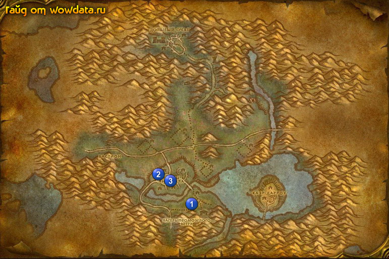

1) Закончите <Тетушка Марлен> в доме на востоке от лагеря 1 (49, 78), начните <Странный историк>.
2) Севернее дома 1 (49, 76) вы найдете монумент.
3) Закончите <Странный историк> на 2 этаже гостиницы 2 (39, 67), начните <Анналы Дарроушира>. Также начните <Вопрос времени>.
4) Около используйте [Временный переместитель] у специальных башенок (их легко отличить, на вид сделаны из досок + слабое синее свечение) для квеста <Вопрос времени>. При использовании хорна будут суммониться 1-3 твари, после убийства каждой могут сумониться еще 1-3. Больше всего башенок в восточной части “города”.
5) Идите делайте <Анналы Дарроушира>, книга 3 (43, 69) находится в доме проход к которому охраняется кучей мобов но можно пройти с юго-западной части дома, тогда мобы вас не заметят.
6) Идите обратно в гостиницу 2 (39, 67) и на втором этаже закончите <Вопрос времени>, начните <Отсчет времени>, также закончите <Анналы Дарроушира>, начните <Брат Карлин>.
7) Идите и делайте <Отсчет времени> около здания.
8) Вернитесь в гостиницу 2 (39, 67) и на втором также закончите <Отсчет времени>. Можете выполнить квест еще раз =)